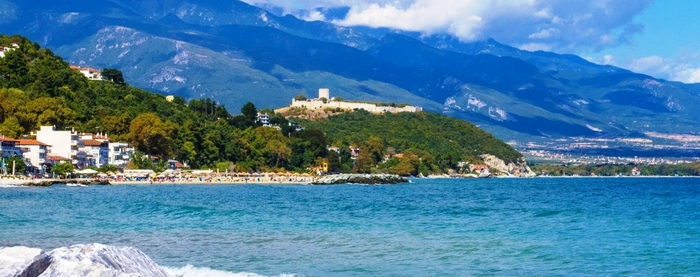

7 motive ca să alegi o vacanță în Grecia!
Este locul unde poti trai o vacanta de vis. Cand ne facem planurile de vacanta, ne imaginam plaje intinse cu apa cristalina, taverne, mancare gustoasa si voie buna. Nu ai cum sa regreti daca alegi sa iti petreci vacanta oriunde in Grecia.
Grecia este renumita pentru conditiile climatice perfecte. Indiferent de sezon si de destinatie, veti avea parte de soare din plin. Stiati ca, in Grecia in majoritatea locurilor sunt 300 de zile cu soare, pe an?
Fiecare loc din Grecia are un stil autentic diferit, atat in insule cat si pe continent. Nu ai cum sa nu te indragostesti de peisajul virgin, culoarea marii si lumina stralucitoare a soarelui.
Fiecare bucatica de teren, din Grecia, are legatura cu trecutul. In insule si pe continent exista situri arheologice, din diferite perioade istorice, resturi de temple antice grecesti si manastiri bizantine.
Grecia este renumita pentru preparatele sale sanatose si gustoase. Produce ulei virgin de masline, legume, fructe, peste, nuci si vin. Nu ezitati sa gustati din preparatele mediteraneene, sunt aboslut delicioase, indiferent de ce taverna alegeti.
Iti doresti sa ai o vacanta plina cu petreceri? Atunci, ai la alegere intre Insulele Mykonos, Paros, Ios, Skiathos, Rhodes, Corfu, Zakynthos, aici petrecerile incep la amiaza si tin pana la rasaritul soarelui. Te poti bucura de cocktail-uri, soare, mare, nisip si dans cat te tin picioarele.
Cu siguranta ati auzit, Grecia este o destinatie preferata de celebritati. Majoritatea viziteaza insulele, se plimba cu iahturile si profita din plin de soarele arzator si petrecerile nebune.